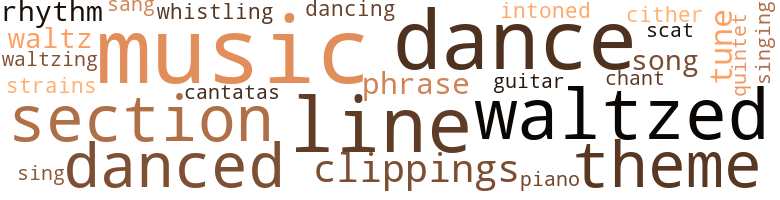
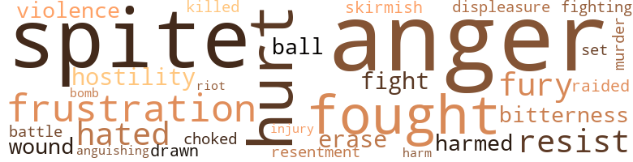

Entwined Destinies, by Welles, Rosalind (1980)
67 music-related terms matched in this text.
Most frequent terms in this topic: music (9); dance (6); waltzed (5); line (5); section (4)
cantata.n.01
Definition: a musical composition for voices and orchestra based on a religious text
| word | sentence |
|---|---|
| cantatas | They discovered the many things they had in common , from an affection for Bach cantatas ( as well as for early rock * n ' roll clas - sics ) to a passion for butter pecan ice cream . |
chant.n.01
Definition: a repetitive song in which as many syllables as necessary are assigned to a single tone
| word | sentence |
|---|---|
| chant | Newhall-Grant was determined he would restore the Prince Edward to its early grandeur , as its reputation had slipped while under the ownership of the mer - chant 's heir . |
clipping.n.01
Definition: an excerpt cut from a newspaper or magazine
| word | sentence |
|---|---|
| clippings | Then she turned to the company 's folder and selected the clippings on their Dagombi operations . |
| clippings | Kathy did a thorough reading of the news clippings on Da - gombi for her lunch with Olu , and studied the clip - pings and reports in the TransGlobal folders . |
| clippings | In less than an hour Kathy was back at the office , poring over news clippings from Upbeat 's folders on the oil industry . |
dance.n.01
Definition: an artistic form of nonverbal communication
| word | sentence |
|---|---|
| dance | As she readied a sharp retort , her attention was drawn by a loud - speaker announcement that a traditional dance depict - ing African womanhood was about to be performed on the small stage at the end of the hall . |
| dance | The dance presentation was entitled " The Passage of Binta , " and was divided into six segments which fol - lowed a woman in her roles at birth , as child , a young maiden , as a wife , mother , and grandmother . |
| dance | The second segment of the dance showed young Binta being schooled in the female graces and trained for womanhood . |
| dance | " Kathy , that was quite a stunning dance presenta - tion , was n't it ? " he said enthusiastically . |
| dances | He eventually meets a childhood friend from Arima who has a band and he begins to earn a few pounds playing at weekend dances . |
| dance | Well , I did have a terrific dance partner . " |
dance.n.02
Definition: a party of people assembled for dancing
| word | sentence |
|---|---|
| dance | The party retired to have brandy in a large salon off the drawing room , where a quintet of musi - cians began to play dance tunes . |
dance.v.02
Definition: move in a pattern; usually to musical accompaniment; do or perform a dance
| word | sentence |
|---|---|
| dancing | Lloyd was dancing with Aunt Kathleen . |
dance.v.03
Definition: skip, leap, or move up and down or sideways
| word | sentence |
|---|---|
| danced | They danced well together , but Kathy was willing enough to change partners occasionally , for each time Lloyd held her in his arms , he sent shivers of delight through her body . |
| danced | For the re - maining numbers they danced together , both aware of a mounting tension as their bodies swayed together . |
| danced | She danced like a dream . |
| danced | Kathy smiled to herself remembering her dream where her aunt and Lloyd had danced and whispered about her . |
guitar.n.01
Definition: a stringed instrument usually having six strings; played by strumming or plucking
| word | sentence |
|---|---|
| guitar | He also plays guitar with a bunch of fellows from Arima . '' |
music.n.01
Definition: an artistic form of auditory communication incorporating instrumental or vocal tones in a structured and continuous manner
| word | sentence |
|---|---|
| music | The music had also stopped , and as Kathy ran down the garden path she heard leaves crunch beneath her feet . |
| music | And there had been music . |
| music | As she went through her routine , the music of the Strauss waltz came to mind , and she moved in rhythm to it . |
| music | Soft music played on the phonograph . |
| music | Kathy closed her eyes , letting the music drift around her and she drank in the feeling of pleasurable warmth that permeated her entire body . |
| music | Popular island music drifted from record shops . |
| music | Our star really is Trinidadian , and the background music is an original score by a group of musicians from several of the islands . " |
| music | Once again the older woman was a soothing influence on her dis - tressed niece , offering her the restorative solace of a sunny room , delicious home-cooked meals , and the quiet distractions of recorded classical music and ab - sorbing games of chess . |
| music | A little way from Ka - thy 's own building was Wigmore Hall , where one could always hear a chamber music concert or recital . |
phrase.n.02
Definition: a short musical passage
| word | sentence |
|---|---|
| phrase | Kathy spoke the last phrase along with Lloyd and she began to forget that she had thought him scornful and cold . |
| phrases | To keep your chin up , and all the other pat phrases of comfort . |
piano.n.01
Definition: a keyboard instrument that is played by depressing keys that cause hammers to strike tuned strings and produce sounds
| word | sentence |
|---|---|
| piano | But a quick glance around the room revealed fine pieces of intri - cately ornamented Louis Fifteenth furniture , includ - ing a walnut grand piano from the period , an antique French clock , and paintings by French , Italian , and Spanish masters . |
quintet.n.01
Definition: a musical composition for five performers
| word | sentence |
|---|---|
| quintet | The party retired to have brandy in a large salon off the drawing room , where a quintet of musi - cians began to play dance tunes . |
rhythm.n.04
Definition: the arrangement of spoken words alternating stressed and unstressed elements
| word | sentence |
|---|---|
| rhythm | As she went through her routine , the music of the Strauss waltz came to mind , and she moved in rhythm to it . |
| rhythms | Lloyd held Kathy comfortably close to him , one large hand on her waist as he guided them to slow , romantic ballads and up-tempo rhythms . |
scat.n.01
Definition: singing jazz; the singer substitutes nonsense syllables for the words of the song and tries to sound like a musical instrument
| word | sentence |
|---|---|
| scat | What a sight she must bel And now she was ruining his front scat too . |
section.n.01
Definition: a self-contained part of a larger composition (written or musical)
| word | sentence |
|---|---|
| section | Craig 's eyes again turned to the press section and he met Kathy 's stare . |
| section | The Life-style section wants to do a piece on English coun - try inns . |
| section | They 're trying to liven up the section with more fea - tures in addition to the reviews . |
| section | Kathy had arrived moments before they were to begin , and she took a seat in the section at the left of the room that had been reserved for the press . |
sing.v.02
Definition: produce tones with the voice
| word | sentence |
|---|---|
| singing | We 're all shampooing and singing with Nellie Forbush about washing that mart right out of our hair . " |
| sing | You 're going to have to let me hear you sing your numbers . " |
| sang | Kathy sang in the shower and used the French after - shower gel she had bought in a moment of extrava - gance . |
song.n.01
Definition: a short musical composition with words
| word | sentence |
|---|---|
| song | Every song is beau - tiful . |
| song | " A man well acquainted with wine , women , and j song , eh , Adrian ? " |
theme.n.03
Definition: (music) melodic subject of a musical composition
| word | sentence |
|---|---|
| theme | The theme was the blending of tradition and technology in modern-day African society . |
| theme | The students were happy to talk with a reporter about the festival theme and seemed to appreciate the fact that the reporter was young and attractive . |
| theme | But I also believe the theme of the festival is important . |
| theme | In keeping with the theme of modernism in African society , the birth took place in an up-to-date village health center . |
tone.v.01
Definition: utter monotonously and repetitively and rhythmically
| word | sentence |
|---|---|
| intoned | " O ye of little faith , " Alyce intoned . |
tune.n.01
Definition: a succession of notes forming a distinctive sequence
| word | sentence |
|---|---|
| line | Kathy spoke with a number of the Dagombian officials she had met on the receiving line , and was introduced to other digni - taries . |
| tune | Kathy gave Adrian a glance that said " I heard , " but he smiled as innocently as she had at Gwendolyn earlier and he went off whistling a marching tune . |
| strains | They were trying to catch up with a century of industrialization and technology in a decade , and this placed great strains on the country 's economic and social fiber . |
| line | His suit was Sav - ile Row , the tie was from a French designer 's line , the shoes of a soft Italian leather polished to a dull glow . |
| line | At the station she joined the long line of workers waiting to exchange handfuls of pence for tickets home . |
| lines | The tuxedo 's lines emphasized his broad shoulders and slim straight hips , and the dress shirt 's stark whiteness contrasted sharply with the dark , polished glow of his mahogany skin . |
| tunes | The party retired to have brandy in a large salon off the drawing room , where a quintet of musi - cians began to play dance tunes . |
| line | In the still - ness of the room , the small voice challenged , Oh , ycalii The Piccadilly line of the London Underground system had regularly scheduled trains that went to Heathrow , and on Sunday morning Kathy took this route to meet her aunt . |
| line | As they moved down the receiving line of dignitaries , Olu spoke her name carefully to each person and took the time to make sure that she had grasped the names and titles of all the officials . |
waltz.v.01
Definition: dance a waltz
| word | sentence |
|---|---|
| waltzed | Round and round they waltzed while a string quartet played num - ber after number . |
| waltz | And she doubted her aunt could waltz . |
| waltzed | Maybe she waltzed too . |
| waltzing | Kathy suddenly had a vision of her aunt waltzing with Lloyd Craig and she smiled . |
| waltzed | She would have to ask her aunt if she waltzed ! |
| waltzed | She did n't know which made her more fu - rious - Evelyn 's ridiculous argument about African women versus Western women , her hints of an im - pending marriage between her and Lloyd Craig , or the blithe way that Evelyn had waltzed into her dream , then waltzed out of it , taking Lloyd with her . |
| waltzed | She did n't know which made her more fu - rious - Evelyn 's ridiculous argument about African women versus Western women , her hints of an im - pending marriage between her and Lloyd Craig , or the blithe way that Evelyn had waltzed into her dream , then waltzed out of it , taking Lloyd with her . |
| waltz | " And another thing I 've been meaning to ask - do you waltz ? " |
whistle.v.01
Definition: make whistling sounds
| word | sentence |
|---|---|
| whistling | Kathy gave Adrian a glance that said " I heard , " but he smiled as innocently as she had at Gwendolyn earlier and he went off whistling a marching tune . |
zither.n.01
Definition: a musical stringed instrument with strings stretched over a flat sounding board; it is laid flat and played with a plectrum and with fingers
| word | sentence |
|---|---|
| cither | She could n't help but wish that they could meet under cir - cumstances that had nothing to do with cither of their jobs . |
67 violence-related terms matched in this text.
Most frequent terms in this topic: anger (11); spite (8); fought (3); hurt (3); bitterness (2)
anger.n.01
Definition: a strong emotion; a feeling that is oriented toward some real or supposed grievance
| word | sentence |
|---|---|
| anger | They had not set another date to see each other , but in spite of his anger Kathy was sure they would meet again . |
| anger | Kathy felt her anger at Evelyn begin to rise again . |
| anger | Kathy felt her anger turn toward the absent Lloyd Craig and she wanted nothing more than to leave this room that reminded her of his presence . |
| anger | Clod , she thought , and smiled in spite of her anger . |
| anger | She began to see the hurt and anger that he had felt as a child who seemed to matter little in his mother 's life . |
| anger | His voice was hot with anger now and his breath heated and stirred her even as she tried to free herself . |
| anger | Hot tears of anger and humiliation filled her eyes and she gave a strangled cry as Lloyd flung his shirt to the floor and bent over her . |
| anger | But his anger had been so swift and fiery , his words so brutal , that Kathy was spent and exhausted . |
| anger | She felt numb and the air in the apartment pressed down on her , charged with the anger and violence that had taken place there . |
| anger | But as she sat in her office remembering Saturday , Kathy 's anger flared again at the harsh words Lloyd had hurled at her , the vulgar accusations he had made . |
| anger | Kathy 's renewed anger and the memory of her hu - miliation won , and she ripped the card in two . |
battle.v.01
Definition: battle or contend against in or as if in a battle
| word | sentence |
|---|---|
| battle | Lloyd had obviously made himself at home , for she faintly heard him humming as he moved around the apartment preparing to battle her chill . |
bombard.v.02
Definition: throw bombs at or attack with bombs
| word | sentence |
|---|---|
| bomb | Who would want to bomb the office ? |
brush.n.06
Definition: a minor short-term fight
| word | sentence |
|---|---|
| skirmish | She felt as though they had completed a skirmish and reached a truce . |
displeasure.n.01
Definition: the feeling of being displeased or annoyed or dissatisfied with someone or something
| word | sentence |
|---|---|
| displeasure | He regarded the scene with obvious displeasure and gave Kathy only a curt nod in greeting as he was escorted to a table . |
draw.v.23
Definition: pull (a person) apart with four horses tied to his extremities, so as to execute him
| word | sentence |
|---|---|
| drawn | * There was a small desk in the room and Kathy sank * into the chair drawn up to it . |
erase.v.01
Definition: remove from memory or existence
| word | sentence |
|---|---|
| erase | Her heart reached out to Lloyd , though , and she yearned to hold him close again and erase the pain from his eyes . |
| erase | How arrogant of him to think that he could erase his outrageous treatment of her with a few glib words . |
fight.v.02
Definition: fight against or resist strongly
| word | sentence |
|---|---|
| fought | I 've fought it . |
| fought | " I 've fought my desire because I had decided when we met that you were the one woman I could not become involved with . |
| fight | His father , a civil servant for the city of Philadel - phia , had been able to complete only one year of night college before he was drafted to fight in World War II . |
| fighting | " Why are you fighting me ? " |
| fight | Kathy had to fight her rising panic . |
| fought | Copies of oils by the grand old masters fought for space with splashy advertisements of exhibitions of avant-garde artists . |
frustration.n.03
Definition: a feeling of annoyance at being hindered or criticized
| word | sentence |
|---|---|
| frustration | The boy 's resentment be - came evident and though the father found it difficult to verbalize his own unhappiness and frustration at first , he finally reached his breaking point and argu - ments between the couple became more and more heated . |
| frustrations | Gwendolyn excused herself to return to the kitchen and Aubrey continued : " Finally , he arrives in Lon - don , midwinter , expecting to stay with relatives , and his troubles and frustrations really begin . |
| frustration | Her frustration welled and Kathy felt suddenly trapped in her office . |
fury.n.01
Definition: a feeling of intense anger
| word | sentence |
|---|---|
| fury | Kathy spoke in a voice that barely concealed her growing fury . |
| fury | Hurt and frightened by his fury Kathy could only moan her resistance as he laid her roughly across the bed and be - gan to tear off his clothing . |
gag.v.06
Definition: cause to retch or choke
| word | sentence |
|---|---|
| choked | Kathy choked on these last words and her aunt came and put an arm around her . |
harm.v.01
Definition: cause or do harm to
| word | sentence |
|---|---|
| harmed | Suppose one of them had been harmed ! |
| harmed | Horror etched many of their faces and the men who had escaped the fire un - harmed wore dazed expressions . |
hate.v.01
Definition: dislike intensely; feel antipathy or aversion towards
| word | sentence |
|---|---|
| hated | Leighton thought all life - style stories were frivolous and he hated assigning them . |
| hated | Kathy sat beside him si - lently , aware that she was repeating a pattern that he hated . |
hostility.n.01
Definition: a hostile (very unfriendly) disposition
| word | sentence |
|---|---|
| hostility | Kathy remembered his near hostility toward her and the other women reporters the first time she had seen him . |
| hostility | So that ex - plained his hostility toward her ! |
injury.n.01
Definition: any physical damage to the body caused by violence or accident or fracture etc.
| word | sentence |
|---|---|
| hurt | She began to see the hurt and anger that he had felt as a child who seemed to matter little in his mother 's life . |
| hurt | If only she could share her hurt . |
| hurt | must be some hurt . |
| harm | On the other hand , it might do irreparable harm to a nation o £ people quite used to getting along with so few bright days . |
| injury | " Indeed - " Alyce feigned injury . |
kill.v.10
Definition: cause the death of, without intention
| word | sentence |
|---|---|
| killed | " My mother was the samel And it nearly killed my father . " |
malice.n.01
Definition: feeling a need to see others suffer
| word | sentence |
|---|---|
| spite | Craig 's back was to Kathy , but he seemed completely absorbed by the woman , and in spite of her anguish Kathy could see why . |
| spite | They had not set another date to see each other , but in spite of his anger Kathy was sure they would meet again . |
| spite | Evelyn 's eyes glinted spite - fully as she delivered this last comment . |
| spite | Clod , she thought , and smiled in spite of her anger . |
| spite | In spite of their age , most of the inns had modern conveniences and services for tourists such as swimming pools , ban - quet suites , horseback riding , and other sports facili - ties . |
| spite | In spite of the presence of her aunt , Kathy spent the next few days anguishing over her delay in calling Lloyd . |
| spite | It was Robert 's dormitory , and the wing he lived in blazed furiously in spite of the firemen 's efforts . |
| spite | He had gone with Alyce to the Theatre of the New World , and had enjoyed the show in spite of himself . |
murder.n.01
Definition: unlawful premeditated killing of a human being by a human being
| word | sentence |
|---|---|
| murder | She curled up in the chintz-covered chair and became absorbed as Christie 's characters be - came enmeshed in a web of murder and mayhem . |
musket_ball.n.01
Definition: a solid projectile that is shot by a musket
| word | sentence |
|---|---|
| ball | Gwendolyn handed it to her with a knowing look and Kathy smiled , asking , " Shall I have your crystal ball gift wrapped ? " |
| ball | " Just come out to lunch with me tomorrow so we can get you fitted with a turban to go with your crystal ball . " |
pain.v.02
Definition: cause emotional anguish or make miserable
| word | sentence |
|---|---|
| Hurt | Hurt and frightened by his fury Kathy could only moan her resistance as he laid her roughly across the bed and be - gan to tear off his clothing . |
| anguishing | In spite of the presence of her aunt , Kathy spent the next few days anguishing over her delay in calling Lloyd . |
raid.v.01
Definition: search without warning, make a sudden surprise attack on
| word | sentence |
|---|---|
| raided | His swagger re - minded her of the dashing Hollywood-style heroes she had cheered as they raided cargo ships on the high seas and ravished women on land . |
resentment.n.01
Definition: a feeling of deep and bitter anger and ill-will
| word | sentence |
|---|---|
| resentment | The boy 's resentment be - came evident and though the father found it difficult to verbalize his own unhappiness and frustration at first , he finally reached his breaking point and argu - ments between the couple became more and more heated . |
| bitterness | But the harshness of his life , the climate , his low wages , and an ugly run-in with the police create a pressure in him that must finally be expressed , tragi - cally , and in the end he is a man on the run , hiding from the police , from his relatives , from the bitterness of his life . " |
| bitterness | He gripped her tightly and the bitterness of his voice hammered at her . |
resist.v.04
Definition: withstand the force of something
| word | sentence |
|---|---|
| resist | It was easier to join him than to resist him and she would have to write a report on the festival . |
| resist | " I want to resist you , Kathy Goodwin , " he said , re - leasing her . |
riot.n.01
Definition: a public act of violence by an unruly mob
| word | sentence |
|---|---|
| riot | " And careful you do n't cause a riot when you start to drive back , " cautioned Adrian . |
sic.v.01
Definition: urge to attack someone
| word | sentence |
|---|---|
| set | Two mugs were set on a tray on the dining table and , as Kathy padded barefoot into the room clutching the robe about her , die scent of rum , lemon , and cloves wafted toward her . |
violence.n.01
Definition: an act of aggression (as one against a person who resists)
| word | sentence |
|---|---|
| violence | " And so it isl What with threats of violence and such . |
| violence | She felt numb and the air in the apartment pressed down on her , charged with the anger and violence that had taken place there . |
wound.n.01
Definition: an injury to living tissue (especially an injury involving a cut or break in the skin)
| word | sentence |
|---|---|
| wound | Kathy 's arms wound tightly around Lloyd 's strong , muscular neck and she felt her - self become powerless under his probing mouth . |
| wound | Kathy un - wound and , finally , was able to talk calmly about Robert , about his kindness , his earnestness , and their love . |
19 religion-related terms matched in this text.
Most frequent terms in this topic: faith (3); praise (2); temple (2); heartthrob (1); chant (1)
chant.n.01
Definition: a repetitive song in which as many syllables as necessary are assigned to a single tone
| word | sentence |
|---|---|
| chant | Newhall-Grant was determined he would restore the Prince Edward to its early grandeur , as its reputation had slipped while under the ownership of the mer - chant 's heir . |
church.n.04
Definition: the body of people who attend or belong to a particular local church
| word | sentence |
|---|---|
| church | From the window Kathy could see the impressive twelfth-century church St. Bartholomew-the-Great , The Monument , and the Tower of London . |
confession.n.05
Definition: the document that spells out the belief system of a given church (especially the Reformation churches of the 16th century)
| word | sentence |
|---|---|
| confession | Kathy raised her brows at this confession . |
eden.n.01
Definition: any place of complete bliss and delight and peace
| word | sentence |
|---|---|
| heaven | An actor or , heaven forbid , a dancer . " |
god.n.03
Definition: a man of such superior qualities that he seems like a deity to other people
| word | sentence |
|---|---|
| God | The girl was given the name Binta , which meant " With God . " |
heartthrob.n.01
Definition: an object of infatuation
| word | sentence |
|---|---|
| heartthrob | She glanced down the newspaper listings and found that a splashy Hollywood import starring the latest screen heartthrob was at the Odeon on St. Martin 's Lane . |
praise.n.02
Definition: offering words of homage as an act of worship
| word | sentence |
|---|---|
| praise | Aubrey had been right in his praise of Gwendolyn 's cooking . |
| praise | The food was delicious and Kathy and her aunt were extravagant in their praise . |
religion.n.01
Definition: a strong belief in a supernatural power or powers that control human destiny
| word | sentence |
|---|---|
| faith | " O ye of little faith , " Alyce intoned . |
| faith | She had gone thinking him more foolhardy than brave , but his absolute faith in his ability to pull off the spectacular stunt was catching . |
| faith | Bennie Thompson was a colorful character and she hoped his bike 's machinery was as sound as his faith . |
siren.n.01
Definition: a sea nymph (part woman and part bird) supposed to lure sailors to destruction on the rocks where the nymphs lived
| word | sentence |
|---|---|
| siren | It was a siren . |
| sirens | The high-pitched wail of sirens told her that additional firefighters from the town were on their way to the school . |
temple.n.03
Definition: an edifice devoted to special or exalted purposes
| word | sentence |
|---|---|
| temple | She sighed and absently twisted a shiny , dark brown wisp of hair that curled at her temple . |
| temples | His lips moved to brush her cheeks and temples . |
| temple | She twisted a dark brown lock near her temple as she decided she would absolutely , definitely place a call to his office . |
testament.n.01
Definition: a profession of belief
| word | sentence |
|---|---|
| testament | The collection was a testament to the superb workmanship of France 's finest cabinet - makers and craftsmen . |
tone.v.01
Definition: utter monotonously and repetitively and rhythmically
| word | sentence |
|---|---|
| intoned | " O ye of little faith , " Alyce intoned . |
worship.v.02
Definition: show devotion to (a deity)
| word | sentence |
|---|---|
| worshiped | The man - agement of Keats had a motto that it was the " Small Serious Restaurant for Committed Gourmets , " and it had created a decor that evoked the Romantic English poet who had worshiped beauty and nature during his brief life . |